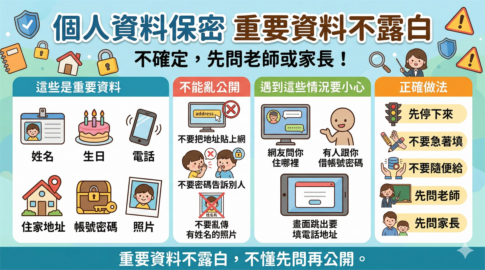

本週資訊圖卡

1
任務一：個人資料保密測驗
先看上面的資訊圖卡，再來挑戰下面 5 題保護自己的小測驗。
題目不多，但每一題都和「重要資料不露白」有關。
這區需要 登入 Google 帳號 才能開始作答，成績會自動記錄。
請先登入才能開始測驗
登入後才能保存你的作答結果，讓老師知道你已經學會保護自己。
2
任務二：下載圖片，找到位置
今天不能自己亂搜尋圖片，只能點老師指定的固定連結。
任務重點不是挑圖比賽，而是練習：下載、找到、打開。
這些圖片下週可能會變成 Email 附件，所以要先學會找檔案位置。
基礎任務
1
從老師指定的圖片頁下載 1 張圖片。
2
打開 下載 資料夾，找到剛剛下載的圖片。
3
點開圖片確認內容正確，並知道下週可以當 Email 附件。
完成檢查
我有打開 下載 資料夾。
我有找到並打開剛剛下載的圖片。
我知道這張圖下週可能會變成 Email 附件。
延伸任務
1
完成基礎任務後，再下載第 2 張 老師指定圖片。
2
到 下載 資料夾找出兩張圖片，並各自點開看一看。
3
想一想：如果下週要寄 Email 附件，你想選哪一張？
老師提醒
今天只是練習下載圖片、找到位置。下週如果要把圖片當成郵件附件，還要再重新下載一次，因為電腦教室的電腦課後會自動還原。
3
任務三：中打闖關〈下雨的時候〉
這一區是主線任務做完後的加分練習，不一定要做完，完成前幾關也很棒。
前 4 關從國語課文〈下雨的時候〉挑句子，第 5 關是驚喜魔王關。
一樣不能複製貼上，只能靠你自己慢慢打出來。
第 1 關
雨天暖身
先把短句打好，注意句號。
下雨的時候。
第 2 關
屋簷小水滴
句子變長了，記得句尾也要打出來。
我喜歡在屋簷下玩水。
第 3 關
一滴一滴落下
這次要打兩行，小心逗號和換行。
雨下得小，
水順著屋簷一滴一滴的落下。
第 4 關
課名作者三行關
這關更長，作者名字也要一起打出來。
第四課 下雨的時候 作者：吳明輝
我喜歡站在窗口，
欣賞外面的雨景。
👑 驚喜大魔王
最終關卡現身！
這一關和今天的主線任務有關，看看你能不能一邊打字，一邊記住重點。
重要資料不露白，家長老師都安心。
圖片下載別迷路，老師同學都說酷！
⚠️ 防禦魔法已啟動！
這裡不能複製貼上，也不能直接偷懶跳過。只要慢慢看、慢慢打，你就能一關一關走下去。
老師的小提醒
今天的重點不是比快，而是先學會保護個人資料，再把下載的圖片找出來。做完主線任務後，有時間再去中打闖關加分。